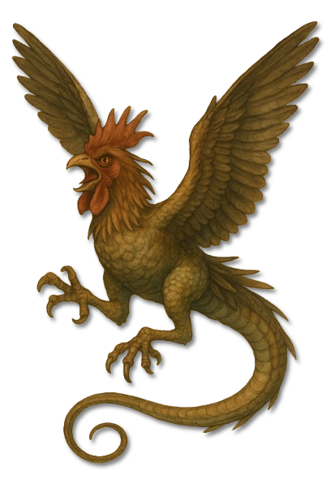
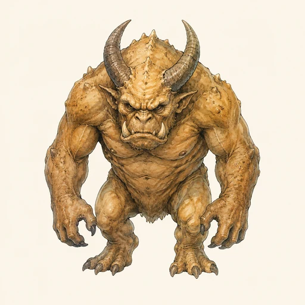
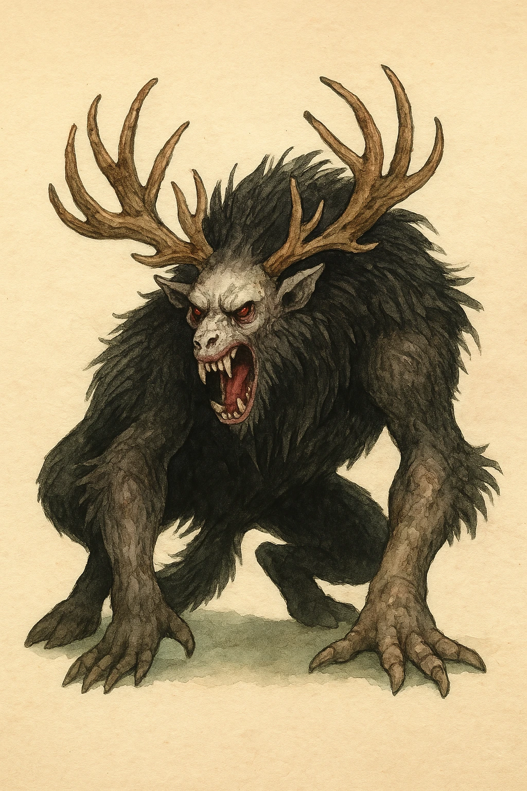

Zatrachischer Unhold
Basilisk
Ein vogel- und echsenhafter Mischjäger, dessen übersteigerte Gestalt die natürliche Ordnung sichtbar verlässt.

KreaturenarchivAleria · Von Zatrach geprägte Jagdreviere · Archivblatt IV / 06
Von Zatrach überformte Mischkreaturen und Jagdreliquien
Unholde sind keine gewöhnlichen Tiere und keine beliebigen Monster, sondern von Zatrach überformte Abweichungen der Natur. In ihren Körpern werden Stärke, Beutetrieb, Revierverhalten und Anpassung bis zum Übermaß gesteigert; selbst vertraute Tiergestalten werden dadurch zu Werkzeugen einer fremden Jagdordnung.

„Der Unhold jagt nicht, weil er Hunger hat; er jagt, weil Zatrachs Ordnung in ihm nur Sieger und Beute kennt.“Lehrsatz der alerischen Unholdkunde
Sechs Merkmale · Skala 1–10
Die Unhold-Tafel folgt Zatrachs Jagdlogik. Sie bewertet, wie stark ein typischer Unhold lernt, sein Revier verteidigt, Verletzungen übersteht und seine Umgebung oder Jäger verderben kann.
Quelle der Einordnung: Aus zatrachischer Überformung, Jagdverhalten, Widerstandskraft, Regeneration und den beschriebenen Folgen längeren Kontakts abgeleitet
Unholde sind der Sammelbegriff für Kreaturen und Monster, deren Ursprung, Prägung oder fortbestehende Existenz Zatrach zugeschrieben wird. Der Jägergott greift aktiv in die natürliche Ordnung ein und verformt sie gegen Silvanis, die für Harmonie, Kreislauf und ökologische Stimmigkeit steht.
Wo Silvanis Gleichgewicht bewahrt, hinterlässt Zatrach Jagdlogik: Selektion, Überformung und Übermaß. Unholde wirken deshalb manchmal wie Tiere, dienen aber nicht länger der natürlichen Balance.
Manche Unholde erscheinen als monströs gesteigerte Spiegel natürlicher Arten. Andere verbinden mehrere Körperformen oder lassen sich nur noch durch Instinkt, Beute- und Reviertrieb erklären.
Gemeinsam ist ihnen keine einheitliche Gestalt, sondern Zatrachs Signatur: Natur wird als Jagdgebiet umgeschrieben und jedes Merkmal danach bewertet, ob es Verfolgung, Kampf oder Überleben verbessert.
Unholde entstehen dort, wo sich Zatrachs und Silvanis Prinzipien überlagern und der Einfluss des Jägergottes die Natur überformt, ohne sie vollständig zu vernichten. Sie entstehen nicht aus dem Nichts, sondern aus bereits vorhandenen Lebensformen und Bindungen.
Rituelle Jagden, Blutopfer, Totemverehrung oder die gezielte Ausrottung von Tierlinien können seinen Einfluss verdichten. Dadurch werden natürliche Wesen anfällig für weitere Überformung.
Besonders tragisch ist das Schicksal korrumpierter Druiden und Naturpriester. Rituale oder erzwungene Pakte reißen sie aus Silvanis Schutz und formen sie zu Waldschraten, Leschen oder höheren Unholden um.
Was einst die Natur bewahrte, besteht danach als ihre Verzerrung fort und verteidigt Zatrachs Jagdordnung gegen jene, die das frühere Gleichgewicht wiederherstellen wollen.
Ein Unhold ist kein passives Ziel. Er beobachtet, erkennt Schwächen und nutzt wiederholte Fehler. Seine Jagd kann sich während einer einzigen Begegnung verändern, wenn eine Beute dieselbe Finte oder denselben Schutz mehrfach einsetzt.
Verdichtete Haut, hohe Ausdauer und teilweise Regeneration sorgen dafür, dass schwere Verletzungen viele Unholde nur verlangsamen. Reine Naturmagie wirkt inkonsistent; jagdbezogene Zauber, alchemistische Mittel und Bannungen gegen Zatrachs Aspekte gelten als verlässlicher.
Übersteigerte Instinkte, starke Revierbindung und Selbstüberschätzung können gegen sie verwendet werden. Die Jagd bleibt dennoch gefährlich, weil längerer Kontakt oder selbst das Erlegen eines Unholds eine schleichende Korrumpierung auslösen kann.